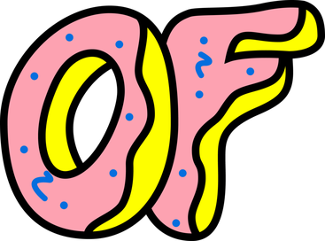

Music

The American singer, Frank Ocean, has released two studio albums, one mixtape, twelve singles and eight music videos. Following the flooding and destruction of his studio during Hurricane Katrina in 2005, Ocean moved from his hometown of New Orleans
to the Californian city of Los Angeles, where he sought to continue his musical career, eventually landing himself a songwriting contract.

In 2009, Ocean signed to Def Jam Recordings as a solo artist. Ocean also formed a friendship with rapper Tyler, The Creator, leader of the Los Angeles-based hip hop collective Odd Future (OFWGKTA) and subsequently became a member of Odd Future, as well
as making three guest appearances on the album Goblin, including the single "She".
In February 2011, he released his first major project, his first mixtape Nostalgia, Ultra, which produced two singles: "Novacane" and "Swim Good". "Novacane" became his first single to chart on the US Billboard Hot 100, where it peaked at number 82. Ocean
also made two guest appearances on the Kanye West and Jay Z collaborative album Watch the Throne.
Odd Future

Odd Future Wolf Gang Kill Them All, normally shortened to Odd Future, is an American hip hop collective formed in Los Angeles in 2007.
The collective was originally formed by Tyler, the Creator with Hodgy, Left Brain, Casey Veggies, The Super 3, and Jasper Dolphin. Later members include Earl Sweatshirt, Frank Ocean, Domo Genesis, Mike G, and Syd. Outside music, Odd Future had an Adult
Swim skit show called Loiter Squad, a clothing line named Golf Wang, as well as a mobile app called Golf Media which contains exclusive interviews, behind the scenes clips, and cartoons. Annually since 2012, Odd Future has held the Camp Flog Gnaw
music festival and carnival in Los Angeles where members of Odd Future and supporting acts perform live.

At surface level, Frank seems like a strange fit for Odd Future. Especially considering the group’s (particularly tyler’s) penchant for homophobic and generally bigoted lyrics. But if you learn more about Frank’s early life, you begin to understand why
the match made perfect sense for both sides.
When Frank originally moved out to LA, he was doing songwriting for other artists as Lonny Breaux. He made some good cash doing this, and ended up penning songs for some high profile names like John Legend, Justin Bieber, and Brandi.

But he was really unfulfilled from the success. In an interview with GQ, Frank said “I was at a real dark time in my life when I met [Odd Future]. I was looking for just a reprieve. At 20 or 21, I had, I think, a couple hundred thousand dollars [from
producing and songwriting], a nice car, a Beverly Hills apartment—and I was miserable... And here was this group of like-minded individuals whose irreverence made me revere. The do-it-yourself mentality of OF really rubbed off on me.”
Crossing paths with Tyler and the rest of Odd Future would change Frank’s life forever. Under their influence and with their support, he began making the transformation from Lonny Breaux the Songwriter, to Frank Ocean the Artist.
Nostalgia Ultra

Nostalgia, Ultra is the debut mixtape by American singer Frank Ocean. It was released on February 16, 2011.
Ocean was inspired to make the mixtape after Hurricane Katrina in his native New Orleans and his subsequent relocation to Los Angeles. After joining alternative hip hop group Odd Future in 2010, he self-released the mixtape, without initial promotion.
Nostalgia, Ultra has a unique R&B aesthetic and features surreal themes and nostalgic lyrics. The songs mostly focus on interpersonal relationships, personal reflection, and social commentary.
Following its release, the mixtape received rave reviews from music critics. The cover features a picture of a bright orange 1980s BMW E30 M3, Ocean's "dream car", in plain sight amidst lush greenery.
Channel Orange

Channel Orange is the 2012 debut studio album by American R&B singer and songwriter Frank Ocean. After releasing his mixtape Nostalgia, Ultra in 2011, Ocean began writing new songs with Malay, a producer and songwriter who assisted
him with recording the album at EastWest Studios in Hollywood.
Rather than rely on samples as he had with his mixtape, Ocean wanted to approach sound and song structure differently on Channel Orange. He titled the album as a reference to the neurological phenomenon grapheme-color synesthesia and the color he claimed
to have perceived during the summer he first fell in love.
Channel Orange has an unconventional musical style, film-inspired segue tracks, and songs that draw on electro-funk, pop-soul, jazz-funk, and psychedelic music. Ocean's songwriting touches on themes such as unrequited love, decadence, class, and drugs
through the use of surrealistic imagery, conversational devices, and descriptive narratives depicting dark characters. His singing on the album exhibits free-form flow and alternating falsetto and tenor registers.
Unreleased, Misc

‘Unreleased, MISC’ contains 14 tracks which didn’t make it on to the US singer and Odd Future member’s mixtape ‘Nostalgia, Ultra’ or his debut album ‘Channel Orange’. The double LP is available on clear vinyl and features ‘Wise
Man’, originally written for the Django Unchained soundtrack.
Other tracks on the album include a collaboration with John Mayer called ‘White’ and ‘Analog 2’, which features Tyler, The Creator and originally appeared on ‘Odd Future Tape 2’. The album is limited to just 750 copies and is available from Rough Trade.
Blond (Blonde)
Blonde was released on August 20, 2016, as a timed exclusive on the iTunes Store and Apple Music, and followed the August 19 release of Ocean's visual album Endless. Initially known as Boys Don't Cry and teased for a July 2015 release, the album suffered
several delays and was the subject of widespread media anticipation leading up to its release.
The album features an abstract and experimental sound in comparison to Ocean's previous releases, and includes guest vocals from André 3000, Beyoncé, Yung Lean and Kim Burrell, among others. Production is handled by Ocean himself, alongside a variety
of high-profile record producers, including Malay and Om'Mas Keith, who collaborated with Ocean on Channel Orange, as well as James Blake, Jon Brion, Buddy Ross, Pharrell Williams and Rostam Batmanglij, among others.
Blonde debuted at number one in several countries, including the United States and the United Kingdom, and in its first week recorded sales of 232,000 copies (275,000 with album-equivalent units). Its physical release was accompanied by a magazine entitled
Boys Don't Cry. The album was supported by lead single "Nikes". It received widespread acclaim from critics and appeared on the year-end lists of 2016, with Metacritic naming it the third most critically acclaimed album of the year by music publications.
Endless
Endless is a video album by American singer Frank Ocean. It was released exclusively through Apple Music on August 19, 2016. It was his last release with his record label Def Jam Recordings to fulfill his recording contract. It was followed by the August
20 release of Ocean's second studio album, Blonde. The album was later remastered and released on CD and vinyl on April 10, 2018, almost two years later.
In The Guardian, Tim Jonze said Ocean mixed the pop with the avant-garde on Endless, calling it "a rich, varied and – at times – challenging musical feast", however noting that "much of this album floats by hazily and with no clear direction".
Q magazine published a joint review of Endless and Blonde which said "these records might not eclipse Channel Orange, but they have their own mercurial gleam, mapping the spaces between people, reaching for a hazy intimacy that almost feels real."
Ryan
Dombal of Pitchfork wrote that "as a piece of filmed entertainment, Endless is painfully dull", however praised the "much more exciting" music, comparing it to a mixtape, and stating that it is "an intriguing peek into [Ocean's] process, and it contains some of the rawest vocal takes he’s ever put out".
For Consequence of Sound, Nina Corcoran wrote that the video "wobbles between its highs and lows". She was ambivalent to the music's abstract nature, noting that "is filled with beauty, but it feels like a dream where you don’t remember much, even if
you take a pen to paper as soon as you wake".
In a mixed review for AllMusic, Andy Kellman wrote that the tracks "melt into one another", concluding that "it's a smartly ordered patchwork of mostly secondary material".